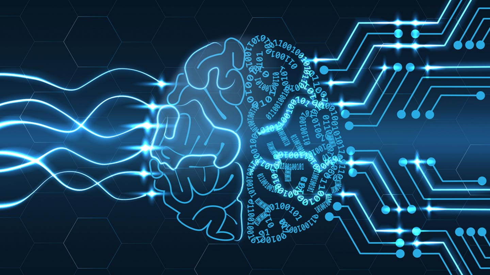

This is the main page for artificial intelligence ... Artificial intelligence (AI) is wide-ranging branch of computer science concerned with building smart machines capable of performing tasks that typically require human intelligence. AI is an interdisciplinary science with multiple approaches, but advancements in machine learning and deep learning are creating a paradigm shift in virtually every sector of the tech industry.
In computer science, artificial intelligence (AI), sometimes called machine intelligence, is the intelligence that machines show, unlike the natural intelligence that humans and animals display. The leading textbook in the field of artificial intelligence defines the field as a study of "smart factors": any device that realizes its environment and takes measures that increase its chance of achieving its goals successfully. Colloquially, the term "artificial intelligence" is often used to describe machines (or computers) that mimic the "cognitive" functions that humans associate with the human mind, such as "learning" and "problem solving."
